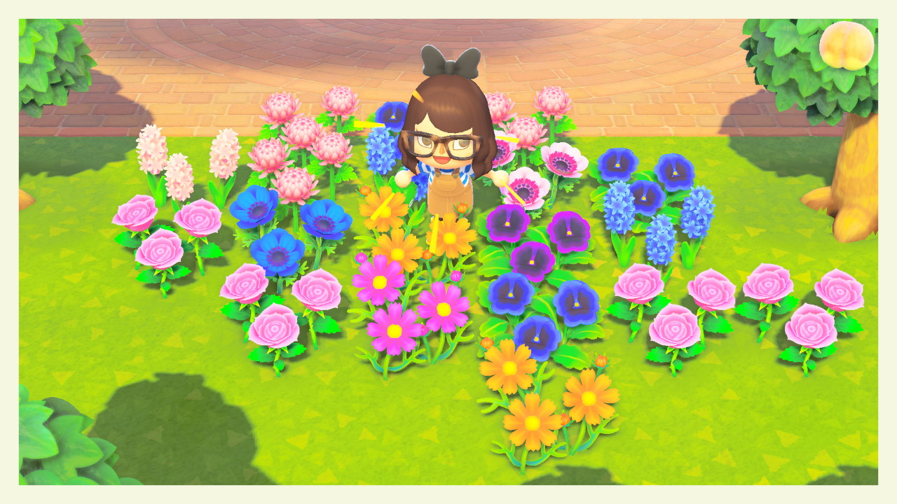

AC Flower Factory
Welcome! AC Flower Factory is designed to help those playing Animal Crossing New Horizons to get large amounts of rare hybrid flowers. There are many (or there soon will be) guides that show the basics of breeding hybrid flowers and how to get each hybrid. This site will contain some of that info, but the emphasis is on making tons of a specific kind of flower.

If you want to make a ton of blue roses to make your friends jealous, you've come to the right place. If you just want to know how to make purple windflowers, check out the Basic Hybrids section.
Major credit to Paleh, Aeter, and Astro who have compiled several google docs and spreadsheets uncovering the mechanics of hybridization in Animal Crossing New Horizons and New Leaf. I first found Aeter's spreadsheet detailing the data-mined flower genetics and some initial theories. Aeter's spreadsheet now points to Paleh's document which details how ACNH flower heredity is "based on basic Mendelian genetics, the same system that’s normally taught in school. Since it’s Mendelian genetics, you can also make use of punnett squares to predict offspring." I should also point out Aeonsake, who built an amazing Flower Breeding Simulator where you can see detailed breeding simulations and placement. Many of the images I use as diagrams are pulled from his site.
My guide seeks to build on their important work by designing methods to make large quantities of these rare flowers—what I call flower factories. Here's a list of current flower factory guides:
I will continue to fill out the guides as I have time. For errors/issues, please report them on Github (no coding background required).